സാാമൂൂഹ്യയശാാസ്ത്രംം
ഭാഗം 1
സ്റ്റാാൻഡേർഡ് VI
കേsരളസർക്കാാർ
പൊൊതുുവിിദ്യാDzാഭ്യാDzാസവകുുപ്പ്്
തയ്യാാറാാക്കിിയത്
സംസ്ഥാാന വിിദ്യാ�ാഭ്യാ�ാസ ഗവേ�ഷണ പരിിശീലന സമിിതി (SCERT) കേേsരളംം
2025
Page 1
Page 2

ദേ�ശീീയഗാനം
ജനഗണമന അധിിനായക ജയഹേ�
ഭാാരതഭാാഗ്യവിിധാതാ,
പഞ്ചാാബസിന്ധുു ഗുജറാാത്ത മറാാഠാാ
ദ്രാാവിിഡ ഉത്ക്കല ബംഗാ,
വിിന്ധ്യഹിമാചല യമുനാഗംഗാ,
ഉച്ഛല ജലധിിതരംഗാ,
തവശുുഭനാാമേ� ജാഗേ�,
തവശുുഭ ആശിഷ മാഗേ�,
ഗാഹേ� തവ ജയഗാഥാാ
ജനഗണമംഗലദാായക ജയഹേ�
ഭാാരതഭാാഗ്യവിിധാതാ
ജയഹേ�, ജയഹേ�, ജയഹേ�,
ജയ ജയ ജയ ജയഹേ�!
Prepared by
State Council of Educational Research and Training (SCERT)
Poojappura, Thiruvananthapuram 695012, Kerala
Website : www.scertkerala.gov.in, e-mail : scertkerala@gmail.com
Typeset and design by : SCERT
First Edition - 2025
Printed at : KBPS, Kakkanad, Kochi
© Department of General Education, Government of Kerala
സാമൂൂഹ്യയശാാസ്ത്രംം
6
പ്രതിജ്ഞ
ഇന്ത്യയ എൻ്റെź രാജ്യമാണ്. എല്ലാാ ഇന്ത്യയക്കാരും�ം എൻ്റെź സഹോ�ോദരീ
ീ
സഹോ�ോദര
ന്മാാരാണ്.
ഞാാന് എൻ്റെź രാജ്യത്തെ� സ്നേേǜഹിക്കുന്നുു; സമ്പൂൂർണ്ണവുംം� വൈൈവിിധ്യ
പൂർണ്ണവുമായ അതിൻ്റെź പാരമ്പര്യയത്തില് ഞാാന് അഭിമാനം കൊsൊള്ളുുന്നുു.
ഞാാന് എൻ്റെź മാതാപിതാക്കളെ�യുംം�
ഗുരുക്കന്മാാരെെയുംം�
മുതിര്ന്നവരെെയുംം�
ബഹുമാനിക്കുംം�.
ഞാാന് എൻ്റെź രാജ്യത്തിൻ്റെźയുംം� എൻ്റെź നാട്ടുുകാരുടെെയുംം� ക്ഷേേäമത്തിനുംം�
ഐശ്വര്യത്തിനുംം� വേ�ണ്ടിി പ്രയത്നിിക്കുംം�.
Page 3

പ്രിിയപ്പെƀട്ട കൂൂട്ടുകാരേ,
ആറാംDZ ക്ലാാസിിലെെ സാമൂൂഹ്യയശാാസ്ത്ര പാാഠപുസ്തകത്തിിന്റെെź ഒന്നാംം ഭാാഗമാണിിത്്. ഏഴ്്
യൂണിിറ്റുുകളാാണ് ഈ പാാഠപുസ്തകത്തിിൽ ഉൾക്കൊÚൊള്ളിിച്ചിിട്ടുള്ളത്്. മനുുഷ്യയരുടെെ ആവിിർ
ഭാാവം മുതൽ അവർ നയിിച്ചുവരുുന്ന സാമൂൂഹിക-സാംംസ്കാാരിക ജീീവിിതത്തെ�ക്കു
ുറിച്ച്
ധാാരണനേ�ടുുന്നതിിന് പര്യാ�ാപ്തമായ രീതിയിലാണ് ഈ പുസ്തകം തയ്യാാറാാക്കിയിട്ടുള്ളത്്.
ഭൂമിയിൽ മനുുഷ്യയർ ആവിിർഭവിിച്ചതുംം� തുടർന്നുള്ള സാംംസ്കാാരിക ജീീവിിതവുംം� പ്രതിി
പാാദ്യയമാക്കിക്കൊÚൊണ്ടാാണ് പാാഠപുസ്തകം ആരംഭിക്കുന്നത്്. തുടർന്ന് ആദ്യയകാല രാഷ്ട്ര
ങ്ങളും�ം മനുുഷ്യയരെെ സ്വാ�ധീീനിച്ച വിിവിിധ ദർശനങ്ങളും�ം ചർച്ചചെ�യ്യു
ുന്നു. 'രാഷ്ട്രവുംം� ഗവൺ
മെെന്റുംം�' എന്ന യൂണിിറ്റിൽ രാഷ്ട്രത്തെ�യുംം� അതിന്റെെź ഘടകങ്ങളെ�യുംം� കുറിച്ച് വിിശദീീ
കരിിക്കുന്നു. 'ഗ്ലോøോബിിൽ നിന്ന് ഭൂപടത്തിിലേേക്ക്' എന്ന പാാഠം ഗ്ലോøോബുുമായി ബന്ധപ്പെƀട്ട
അടിസ്ഥാാന ആശയങ്ങൾ പരിിചയപ്പെƀടുന്നതിിന് സഹാ
ായകമാാണ്. വിിവിിധതരംം ഭൂപട
നിർമ്മാാണ രീതികളെ�ക്കു
ുറിച്ചുംം� ഈ യൂണിിറ്റിൽ പ്രതിിപാാദിക്കുന്നുണ്ട്. സംസ്കാാരം രൂപ
പ്പെƀടുന്നത്് എങ്ങനെ�യെ�ന്നുംം� സംസ്കാാരത്തിിന്റെെź സവിിശേ�ഷതകളെ�ക്കു
ുറിച്ചുംം� 'സംസ്കാാരവുംം�
സാംംസ്കാാരിക വൈൈവിിധ്യങ്ങളും�ം' എന്ന പാാഠം ചർച്ച ചെ�യ്യുുന്നു. 'കൃഷിയിൽ നിന്ന് വ്യവസാ
ായ
ത്തിിലേേക്ക്' എന്ന യൂണിിറ്റിൽ കാർഷികോ�ോൽപാാദനത്തിിൽ നിന്നുംം� വ്യാാ�വസായികോ�ോൽപാാ
ദനത്തിിലേേക്കുളള മാറ്റങ്ങളെ�ക്കുുറിച്ച് വിിശദമാാക്കുന്നു. 'ഭൂഖണ്ഡങ്ങളിലൂടെെ' എന്ന യൂണിിറ്റ്
ഭൂഖണ്ഡങ്ങളെ�ക്കുുറിച്ചറിിയാനുംം� അവയുുടെെ വൈൈവിിധ്യങ്ങൾ പരിിചയപ്പെƀടുന്നതിിനുംം�
സഹാ
ായകമാാകുംം�.
കേ�രള പാാഠ്യപദ്ധതി ചട്ടക്കൂട് 2023 നിർദേ�ശിിക്കുന്ന സാമൂൂഹ്യയശാാസ്ത്ര സമീീപ
നങ്ങളെ� അടിസ്ഥാാനമാാക്കി തയ്യാാറാാക്കിയിട്ടുള്ള ഈ പാാഠപുസ്തകം സാമൂൂഹികപ്ര
തിഭാാസങ്ങളെ� വിിശകലനം
ം ചെ�യ്യുുന്നതിിന് മുതൽക്കൂട്ടാവുമെെന്ന്് പ്രതീീക്ഷിിക്കുന്നു.
കൂൂടാതെ� മാനവരാാശിയുടെെ വിിവിിധ മേ�ഖലകളിിലെെ വളർച്ചയുംം� വിികാസവുംം� തിരിച്ച
റിയുന്നതിിനുംം� അതുപയോ�ോഗിിച്ചുള്ള അറിവുനിർമ്മാാണത്തിിനുംം� ഈ പുസ്തകം നിശ്ച
യമായുംം� സഹാ
ായിക്കുംം�.
ഡോോ. ജയപ്രകാാശ്് ആർ.കെ�.
ഡയറക്ടർ
എസ്.സിി.ഇ.ആർ.ടി., കേ�രളംം
Page 4


ഡോ�ോ. മഞ്ജുു ശങ്കർ കെെs.
റിസർച്ച് ഓഫീീസർ, എസ്.സി.ഇ.ആർ.ടി., കേsരളം
ഡോ�ോ. അഭിലാഷ് കുമാർ കെെs. ജി.
അസിസ്റ്റന്റ് പ്രൊ�ൊഫസ
ർ
ഡിപ്പാർട്ട്മെെന്റ് ഓഫ് പൊൊളിറ്റിക്കൽ സയൻസ്,
ബിി.ജെ�.എം. ഗവ. കോsോളേ�ജ്്, ചവറ, കൊൊsൊല്ലംം
ഡോ�ോ. അഞ്ജന വിി.ആർ. ചന്ദ്രൻ
റിസർച്ച് ഓഫീീസർ, എസ്.സി.ഇ.ആർ.ടി. കേsരളം
ഡോ�ോ. നന്ദകുമാർ ബി. വിി.
അസിസ്റ്റന്റ് പ്രൊ�ൊഫസ
ർ
ഡിപ്പാർട്ട്മെെന്റ് ഓഫ് ഹിസ്റ്ററി,
ശ്രീീ നാരായണ കോsോളേ�ജ്്,
കൊൊsൊല്ലംം
ഡോ�ോ. ആൻ്റണി പാലക്കൽ
പ്രൊ�ൊഫ
സർ & ഹെ�ഡ്
് (റിട്ട)
ഡിപ്പാർട്ട്മെെന്റ് ഓഫ് സോ�ോഷ്യോ�ോ�ളജി,
കേsരള സർവകലാാശാാല,
തിരുവനന്തപുരം
നിഷ ടി. എസ്.
യു.പി. എസ്. ടി.
എസ് എൻ വിി യു പി എസ് , മരുുതമൺപള്ളി, കൊൊsൊല്ലംം
പ്രിയ എസ്. എസ്.
പി.ഡി. ടീച്ചർ, യു.പി.എസ്.ടി.,
ജി.ജി.എച്ച്.എസ്.എസ്. കോsോട്ടൺഹിൽ, തിരുവനന്തപുരം
രാംDZദേ�വ്് പി. ആർ.
എച്ച്്. എസ്. എസ്. ടി. ജിയോ�ോഗ്രഫിി
ജി.എച്ച്്.എസ്.എസ്., വെ�ള്ളത്തൂ
ൂവൽ, ഇടുക്കിി
രാജൻ പി.പി.
ട്രെğയ്നർ,
ബിി.ആർ.സി., മലപ്പുറംം
ബീന എസ്.നായർ
യു.പി.എസ്.ടി., ജി.ജി.എച്ച്.എസ്.എസ്.,
മലയിിൻകീഴ്്, തിരുവനന്തപുരം
ജോ�ോൺ കെെs.
യു.പി.എസ്.ടി (റിട്ട.) ഗവ. വിി & എച്ച്.എസ്.എസ്. ,
പാറശാാല, തിരുവനന്തപുരം
പുഷ്പാംംഗദൻ യു.
യു.പി.എസ്.ടി (റിട്ട.)
ജി.എച്ച്.എസ്.എസ്. അഞ്ചൽ (വെ�സ്റ്റ്്) പുനലൂ�ർ, കൊൊsൊല്ലംം
സംസ്ഥാാന വിിദ്യാ�ാഭ്യാ�ാസ ഗവേ�ഷണ പരിിശീലന സമിിതി (SCERT)
വിിദ്യാDzാഭവൻ, പൂജപ്പുര, തിരുവനന്തപുരം 695 012
ഡോ�ോ. കെെs. എൻ. ഗണേ�ഷ്
ചെ�യർമാൻ, കേsരള കൗൺസിൽ ഫോ�ോർ
ഹിസ്റ്റോ�ോറിിക്കൽ റിസർച്ച്
അഡ്വൈ�ൈസർ
ചെ�യർപേ�ഴ്്സൺ
വിിദഗ്്ധർ
അംഗങ്ങൾ
ചിത്രകാരർ
അക്കാാദമിിക് കോsോഡിനേ�റ്റർ
ദീപേ�ഷ് ടി., കണ്ണൂൂർ
ആൽബിൻ ഫ്രാാൻസിസ്, തിരുവനന്തപുരം
ഹരിികൃഷ്ണൻ ജി., കൊൊsൊട്ടാരക്കര
അഭിനന്ദ് ബാബു, തിരുവനന്തപുരം
ആൽബർട്ട് വിി.സ്റ്റീീഫൻ, പത്തനംംതിട്ട.
അനിൽകുമാർ കെെs.
ഹെ�ഡ്മാാസ്റ്റർ
ജി.എച്ച്.എസ്. കണ്ടല, തിരുവനന്തപുരം
പാഠപുസ്തകരചനാസമിതി
Page 5


ഉള്ളടക്കം
ം
ഈ പുുസ്തകത്തിിൽ പഠനസൗൗകര്യയത്തിിനായിി
ചിില ചിിഹ്നങ്ങൾ ഉപയോ�ോ
ഗിിച്ചിിരിക്കുുന്നുു
തുുട�ർവാായന
(വിിലയിിരുുത്തലിന്് വിിധേ
യമാാക്കേേÚണ്ടതിില്ല)
ഐ.സി.ടി
നിർമ്മിിക്കാം
റോോൾപ്ലേേƃ
തുുടർപ്രവർത്തനങ്ങൾ
പ്രവർത്തനംം
ചർച്ച ചെ�യ്യാംം
1
ആദിിമ മനുഷ്യയരും�ം സംസ്കാാരങ്ങളും�ം.................................7-22
2
ആദ്യകാല രാഷ്ട്രങ്ങൾ.......................................................23-36
3
രാാഷ്ട്രവുംം� ഗവൺമെെന്റുംം�...................................................37-47
4
ഗ്ലോøോബിിൽ നിന്ന് ഭൂൂപടത്തിിലേ�ക്ക്്..................................48-59
5
സംംസ്കാാരവുംം� സാം
സ്കാാരിക വൈൈവിിധ്യയങ്ങളും�ം............60-74
6
കൃഷിയിിൽ നിന്ന് വ്യവസാ
ായത്തിിലേ�ക്ക്്.......................75-86
7
ഭൂൂഖണ്ഡങ്ങളിലൂടെെ... .....................................................87-102
പ്ലക്കാർഡ് നിർമാണംം
എഴുുതാം�
Page 6
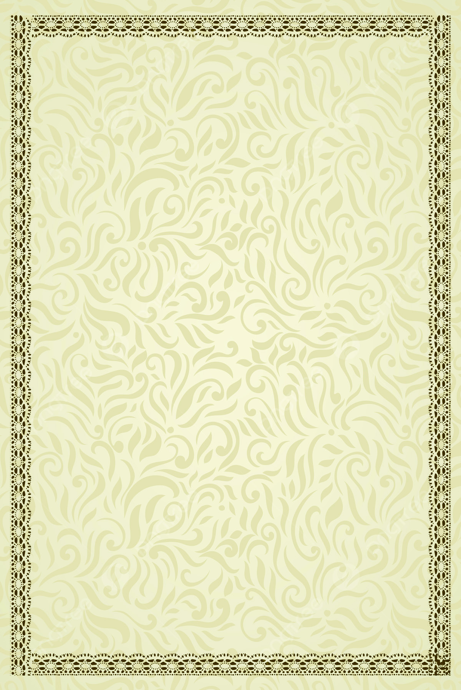
ഭാാരതത്തിൻ്റെź ഭരണഘടന
ആമുഖംം
ഭാാരതത്തിലെ� ജനങ്ങളായ നാംം ഭാരതത്തെ� ഒരു
1[പരമാാധിികാര സ്ഥിതിസമത്വവ മതേ�തര ജനാധിിപത്യ
റിപ്പബ്ലിിക്കായി] സംവിിധാാനം ചെ�യ്യുുവാനുംം� അതിലെ
പൗരന്മാാർക്കെ�ല്ലാംംDZ:
സാമൂൂഹ്യയവുംം� സാമ്പത്തിികവുംം� രാഷ്ട്രീയവുംം� ആയ നീതിയുംം�;
ചിന്തയ്ക്കുംം�
ആശയപ്രകടന
ത്തിിനുംം�
വിിശ്വാാ�സത്തിിനുംം�
മതനിിഷ്ഠയ്ക്കുംം� ആരാധനയ്ക്കുംം� ഉള്ള സ്വാാ�തന്ത്ര്യയവുംം�;
പദവിിയിലുംം� അവസരത്തിിലുംം� സമത്വവവുംം�;
സംപ്രാപ്തമാക്കുവാനുംം�;
അവർക്കെ�ല്ലാാമിടയിൽ
വ്യയക്തിിയുടെെ അന്തസ്സുംം�
2[രാഷ്ട്രത്തിിൻ്റെź ഐക്യയവുംം�
അഖണ്ഡതയുംം�] ഉറപ്പുവരുുത്തിിക്കൊ�ൊണ്ട്് സാാഹോ�ോദര്യം�
ം
പുലർത്തുവാനുംം�;
സഗൗരവം തീരുമാനിച്ചിിരിക്കയാാൽ;
നമ്മുുടെെ ഭരണഘടനാനിർമ്മാണസഭയിിൽ ഈ 1949
നവംംബർ ഇരുപത്താാറാംDZ ദിവസം
ം ഇതിനാൽ ഈ ഭരണ
ഘടനയെ� സ്വീീ�കരിിക്കുകയുംം� നിയമമാാക്കുകയുംം� നമുക്കു
തന്നെ� പ്രദാാനം ചെ�യ്യുുകയുംം� ചെ�യ്യുുന്നുു.
1. 1976 - ലെ ഭരണഘടന (നാല്പത്തിിരണ്ടാംം ഭേ�ദഗതി) ആക്റ്റ്് 2-ാംDZ വകുുപ്പു
പ്രകാാരം ‘‘പരമാധികാര ജനാാധിപത്യയ റിപ്പബ്ലിിക് ’’ എന്നതിിന് പകരം ചേ�ർ
ത്തത്് (3.1.1977 മുതൽ പ്രാബല്യംDzം).
2. മേ�ല്പറഞ്ഞ ആക്റ്റ്് 2-ാംDZ വകുുപ്പു പ്രകാാരം ‘‘രാഷ്ട്രത്തിിൻ്റെź ഐക്യംം�’’എന്നതിിനുു
പകരം ചേ�ർത്തത്് (3.1.1977 മുതൽ പ്രാബല്യംDzം).
Page 7

‘ഒരച്ഛൻ മകൾക്കയച്ച കത്തുുകൾ’ എന്ന ജവഹ
ർലാൽ നെ�ഹ്്റുവിിന്റെź പുസ്തകത്തിിലെ ഒരു ഭാഗമാണ്
നിങ്ങൾ വായിച്ചത്്.
ഇതിൽ ജവഹ
ർലാൽ നെ�ഹ്്റു പരാമർശിക്കുന്ന ചരിത്രശേ�ഷിിപ്പ്് എന്താണ്?
•
ഇത് എവിിടെെ നിന്ന് ലഭിച്ചു എന്നാാണ് അദ്ദേേŔഹം സൂചിപ്പിക്കുന്നത്്?
•
ആദിമ മനുുഷ്യയന്റെź ഈ ചരിത്രശേ�ഷിിപ്പിന് ലക്ഷക്കണക്കിിന് വർഷങ്ങൾ പഴക്കമുുണ്ടെ�ന്നാാണ്
കണക്കാാക്കപ്പെ�ട്ടിിരിക്കുന്നത്്.
ആദിമ മനുുഷ്യയർ ഒരിക്കലുംം�
നാംം ഇന്ന് കാണുന്നതുുപോോലെ
ആയിരുന്നിരിക്കില്ല. പകുതി
കുരങ്ങുംം� പകുതി മനുുഷ്യയനുു
മായിരുന്ന അവർ ഏതാണ്ട്
കുരങ്ങിനെ�പ്പോ�ോലെ തന്നെ�
ജീീവിിച്ചിിരിക്കണം
ം. ജർമ്മനിി
യിൽ ഹൈൈഡൽബർഗ് എന്ന
പട്ടണത്തിിൽ ഒരു പ്രൊ�ൊഫ
സ
റെെ കാണാൻ നമ്മൾ പോോയത്
നിനക്ക് ഓർമ്മയുുണ്ടോ�ോ? ജന്തു
ക്കളുുടെെ അവശിിഷ്ടങ്ങൾ സൂക്ഷിി
ച്ചിിട്ടുളള ഒരു കാഴ്്ചബംഗ്ലാവ്
അദ്ദേേŔഹം നമുുക്ക് കാണിിച്ചു
തന്നു. അതിൽ വിിശേ�ഷിിച്ച് ഒരു
തലയോ�ോട്് അദ്ദേേŔഹം ഒരു ഇരുമ്പു
പെട്ടിയിൽ ഭദ്രമായി സൂക്ഷിിച്ചിി
രുന്നുവല്ലോ�ോ. അത് ഒരു ആദിമ
മനുുഷ്യയന്റെź തലയോ�ോടാാണത്രെ�. ആ
ആദിമ മനുുഷ്യയനെ� ഇപ്പോ�ോൾ 'ഹൈൈ
ഡൽബർഗ് മനുുഷ്യയൻ' എന്നാാണ്
പറഞ്ഞുുവരുുന്നത്്. ആ തലയോ�ോട്്
ഹൈൈഡൽബർഗ് എന്ന പട്ടണ
ത്തിിനുു സമീപം ഒരു ദിക്കിൽ
കുഴിച്ചപ്പോ�ോ
ൾ കണ്ടുുകിട്ടിയതുു
കൊൊsൊണ്ടാാണ് ആ പേേര് വന്നത്്.
അവലംംബം - ‘ഒരച്ഛൻ മകൾക്കയച്ച കത്തുുകൾ’
ജവഹ
ർലാൽ നെ�ഹ്്റു
ആദിമ മനുുഷ്യരും�ം സംസ്കാാരങ്ങളും�ം
ആദിമ മനുുഷ്യരും�ം സംസ്കാാരങ്ങളും�ം
1
Page 8

സാാമൂൂഹ്യയശാാസ്ത്രംം ക്ലാാസ്
സാാമൂൂഹ്യയശാാസ്ത്രംം ക്ലാാസ് VI
VI
8
ഭാാഗംം
ഭാാഗംം 1
ഇത്രയേറെെ വർഷങ്ങൾക്കുു മുുമ്പ്് ജീീവിച്ചിിരുുന്ന മനുുഷ്യരെെക്കുുറിച്ചോ�ോ ആ കാാലഘട്ടത്തെെĹ
ക്കുുറിച്ചോ�ോ നിങ്ങൾക്ക് ചിിന്തിിക്കാാൻ കഴിിയുന്നുണ്ടോĬോ?
അക്കാാലത്തെെĹ മനുുഷ്യരുുടെെ ചരിിത്രം നമുുക്ക് പരിശോോധിിച്ചാാലോ�
ോ?
പൂർവികരെെ കണ്ടെെĬത്താം
ബിി.സിി.ഇ. - സിി.ഇ.
കാാലഗണന അനുുസരിച്ച് ചരിിത്രത്തെെĹ രണ്ട് കാാലഘട്ടങ്ങളാായി വിഭജിച്ചിിരി
ക്കുുന്നു- പൊ�ൊതുുവർഷത്തിന് മുുമ്പുംം� (Before Common Era- BCE) പൊ�ൊതുുവർഷവുംം�
(Common Era- CE). യേശുക്രിിസ്തുുവിറെź ജനനത്തെെĹ അടിസ്ഥാാനമാാക്കിി മുുൻകാാല
ങ്ങളിൽ ബിി.സി. (BC), എ.ഡിി. (AD)എന്നിങ്ങനെ�യാാണ് വിഭജിച്ചിിരുുന്നത്. ക്രിിസ്തുു
ജനിിക്കുുന്നതിനുു മുുമ്പുള്ളകാാലം ബിി.സി. (Before Christ) എന്നുംം� ക്രിിസ്തുുവിറെź
ജനനത്തി
ിന് ശേേഷമുുളള കാാലം എ.ഡിി. (Anno Domini) എന്നുംം� അറിയപ്പെെƀട്ടിരുുന്നു.
ഇന്ന് ഇത് യഥാാക്രമംം ബിി.സി.ഇ. എന്നുംം� സി.ഇ. എന്നുമാാണ് അറിയപ്പെെƀടുന്നത്.
ചിിത്രംം 1.1
സിനുു തന്റെറെź കുടും�ംബത്തിലെ�
മുുൻ തലമുുറകളിിലെ� അംഗ
ങ്ങളെ� ഉൾപ്പെെƀടുത്തി തയ്യാാറാാ
ക്കിയ കുടും�ംബവൃക്ഷംം ശ്രദ്ധിിക്കൂ.
ഇതുുപോ�ോലെ� നിങ്ങളുടെെ കുടും�ം
ബത്തിലെ� എത്ര തലമുുറകളെ�ക്കുു
റിച്ചുളള വിവരങ്ങൾ നിങ്ങൾക്ക്
കണ്ടെെĬത്താാൻ കഴിിയുംം�?
ഇങ്ങനെ� അനേ�കാായിരം തലമുു
റകൾ പിറകോ�ോട്ട് പോ�ോകാാൻ കഴിി
ഞ്ഞാാൽ നമുുക്ക് ആദിിമ മനുുഷ്യരിൽ
ചെ�ന്നെ�ത്താം.
Page 9


സാാമൂൂഹ്യയശാാസ്ത്രംം ക്ലാാസ്
സാാമൂൂഹ്യയശാാസ്ത്രംം ക്ലാാസ് VI
VI
9
ആദിിമ മനുുഷ്യയരും�ം സംംസ്കാാരങ്ങളും�ം
ആദിിമ മനുുഷ്യയരും�ം സംംസ്കാാരങ്ങളും�ം
ഫോോസിിലുുകൾ
പുരാാതന സസ്യങ്ങൾ, മൃഗങ്ങൾ, മനുു
ഷ്യർ എന്നിവയുടെെ ശേേഷിപ്പുകളാാണ്
ഫോോസിലുകൾ. പൊ�ൊതുുവേ� പാാറക
ളിൽ പതിഞ്ഞിരിക്കുുന്ന ഇവ ദശലക്ഷ
ക്കണക്കിന് വർഷങ്ങളാായി സംരക്ഷി
ക്കപ്പെെƀട്ടിരിക്കുുന്നു.
ബിി.സിി.ഇ.
മനുുഷ്യയരുുടെെ ഉദ്്ഭവവുംം� പരിണാാമവുംം�
ആദിിമ മനുുഷ്യരുുടെെ ചരിിത്രത്തെെĹക്കുുറിച്ച് അറിയാാൻ
നമ്മെെƣ സഹാായിക്കുുന്ന പ്രധാാന സ്രോǟോതസ്സുുകളാാണ്
മനുുഷ്യഫോോസിലുകൾ. ഇത്തരം ഫോോസിലുകളുുടെെ
കാാലപ്പഴക്കം ശാാസ്ത്രീീയമാായി നിർണ്ണയിച്ചാാണ്
് മനുു
ഷ്യരുുടെെ ഉദ്ഭവത്തിറെźയുംം� പരിണാാമത്തിറെźയുംം�
ചരിിത്രം രൂപപ്പെെƀടുത്തിയിരിക്കുുന്നത്.
മനുുഷ്യപരിണാാമം
മനുുഷ്യരുുടെെ ഉദ്ഭവത്തെെĹക്കുുറിച്ച് ശാാസ്ത്രീീയമാായൊൊരുു
കാാഴ്്ചപ്പാാട് മുുന്നോ�ോട്ടുവച്ചത്് ചാാൾസ് ഡാാർവിനാാണ്. ദീർഘകാാലംകൊ�ൊണ്ട് സംഭവിച്ച ജൈൈവിിക
മാാറ്റത്തിലൂടെെയാാണ് മനുുഷ്യരുുടെെ ഉദ്ഭവമെെന്ന്് അദ്ദേേŔഹം അഭിപ്രാായപ്പെെƀട്ടു. ഈ പ്രക്രിിയക്ക്്
അദ്ദേേŔഹം പരിണാാമം എന്ന പേ�ര്് നൽകി. 1859 ൽ പ്രസിദ്ധീകരിിച്ച 'ഓൺ ദിി ഒറിജിൻ ഓഫ്
സ്പീീഷീസ്' എന്ന ഗ്രന്ഥത്തിലാാണ് മനുുഷ്യപരിണാാമത്തെെĹക്കുുറിച്ചുളള സിദ്ധാാന്തം അദ്ദേേŔഹം
അവതരിിപ്പിച്ചത്്.
ചാാൾസ് ഡാാർവിൻ
1809 ഫ്രെെƋബ്രുുവരി 12ന് ഇംഗ്ലണ്ടിലാാണ് ചാാൾസ് ഡാാർവിൻ ജനിിച്ച
ത്. ഭൂമിയിൽ ജീീവറെź ഉദ്ഭവത്തിലേ�ക്കുംം� ജീീവജാാലങ്ങളുടെെ വൈൈ
വിധ്യത്തിലേ�ക്കുംം� നയിിച്ച പ്രക്രിിയകൾ മനസ്സിലാാക്കാാൻ സഹാാ
യിച്ച പ്രകൃതിശാാസ്ത്രജ്ഞനാാണ് അദ്ദേേŔഹം. എല്ലാാ ജീീവജാാലങ്ങളും�ം
പരിണമിച്ച് രൂപപ്പെെƀട്ടതാാണെ�ന്നുംം� ഓരോ�ോ ജീീവിവർഗവുംം� ഇന്ന
ത്തെെĹ രൂപത്തിലെ�ത്താാൻ അനേ�കലക്ഷംം വർഷങ്ങൾ എടുത്തു
വെ�ന്നുംം� ചാാൾസ് ഡാാർവിൻ തന്റെറെź പരിണാാമ സിദ്ധാാന്തത്തി
ിലൂടെെ
വിശദീീകരിിച്ചു.
ചാാൾസ് ഡാാർവിൻ
മനുുഷ്യരുുടെെ പൂർവികർ
ആദിിമ മനുുഷ്യർ രൂപംകൊ�ൊണ്ടത് ദശലക്ഷക്ക
ണക്കിന് വർഷങ്ങൾക്ക് മുുമ്പാാണ്
്. സസ്തനിികളിിൽ
ഒരുു വിഭാാഗമാായ പ്രൈൈമേ�റ്റുുകളിിൽനിന്നാാണ്
് മനുുഷ്യപരിണാാമം ആരംഭിക്കുുന്നത്. പരിണാാമത്തി
റെź വിവിധ ഘട്ടങ്ങൾ ഉൾപ്പെെƀടുത്തിയിട്ടുള്ള ഫ്ലോƌോചാാർട്ട് നിരീക്ഷിക്കൂ.
സിി.ഇ.
500 400 300 200
100
1
1
100 200 300
400 500
ഒരുു നൂറ്റാാണ്ട്് എന്നാാൽ നൂറ്് വർഷമാാണ്
്. ഒരുു ദശലക്ഷംം വർഷമെെ
ന്നാാൽ പത്ത്്
ലക്ഷംം വർഷമാാണ്
്.
Page 10

സാാമൂൂഹ്യയശാാസ്ത്രംം ക്ലാാസ്
സാാമൂൂഹ്യയശാാസ്ത്രംം ക്ലാാസ് VI
VI
10
ഭാാഗംം
ഭാാഗംം 1
ഹോോോമോ�ോ ഹാാബിിലിസ്
ഉപകരണ നിർമ്മാാതാാക്കൾ
ഹോോോമോ�ോ സാാപ്പിിയൻസ്
ബുദ്ധിിയുളള മനുുഷ്യർ
ഹോോോമോ�ോ ഇറക്ടസ്
നിവർന്നുനിൽക്കുുന്ന
മനുുഷ്യർ
പ്രൈൈമേ�റ്റുുകൾ
സസ്തനിികളിിൽ ഒരുു വിഭാാഗം
ഹോോോമിനോ�ോയിഡുകൾ
നാാല് കാാലിൽ നടത്തം
ഹോോോമിനിഡുകൾ
ഇരുുകാാലിൽ നടത്തം
ഹോോോമോ�ോ
ആസ്ട്രലോ�ോ പിത്തേേĹക്കസ്
്
പ്രാാചീീന ശിലാായുഗം
മധ്യ ശിലാായുഗം
നവീീന ശിലാായുഗം
ശിലാായുഗം
മനുുഷ്യപരിണാാമത്തിറെź വിവിധ ഘട്ടങ്ങളും�ം അവയുടെെ സവിശേേഷതകളും�ം
ഉൾപ്പെെƀടുത്തി കുറിപ്പ് തയ്യാാറാാക്കൂ.
ഹോ�ോമോ�ോയുടെെ ഉപവിഭാാഗങ്ങളാാണ് ഹോ�ോമോ�ോ ഹാാബിിലിസ്, ഹോ�ോമോ�ോ ഇറക്ടസ്, ഹോ�ോമോ�ോ സാാപ്പി
യൻസ് എന്നിവയെെന്ന് ഫ്ലോƌോചാാർട്ടിൽ നിങ്ങൾ കണ്ടല്ലോ�ോ. നമ്മൾ ഉൾപ്പെെƀടുന്ന മനുുഷ്യവർഗം
ഹോ�ോമോ�ോ സാാപ്പിയൻസ് വിഭാാഗത്തിൽപ്പെെƀടുന്നവരാാണ്.
മനുുഷ്യവികാാസത്തിറെź വിവിധ ഘട്ടങ്ങൾ
ആദിിമ മനുുഷ്യർ വനാാന്തരങ്ങളിലാാണ് വസിച്ചിിരുുന്നത്. കാായ് കനിികൾ ശേേഖരിച്ചുംം� മൃഗങ്ങളെ�
വേ�ട്ടയാാടി അവയുടെെ മാം�സം ഭക്ഷണമാാക്കിയുംം� അവർ ജീീവിച്ചിിരുുന്നു. ചുറ്റുപാാടിൽ നിന്നുംം�
ലഭിച്ച പരുുക്കൻ കല്ലുകളാാണ് അവർ ആയുധമാാക്കിയിരുുന്നത്. ശിലകൾ ആയുധമാായിി ഉപയോോ
ഗിച്ചിിരുുന്നതിനാാൽ ഈ കാാലഘട്ടത്തെെĹ ശിലാായുഗം എന്ന് വിളിക്കുുന്നു. ശിലകൾകൊ�ൊണ്ട് നിർമ്മി
ക്കപ്പെെƀട്ട ആയുധങ്ങളിലുംം� ഉപകരണങ്ങളിലുംം� കാാലക്രമത്തി
ിലുണ്ടാായ പുരോ�ോഗതിയെെ അടിസ്ഥാാ
നമാാക്കി ശിലാായുഗത്തെെĹ മൂന്ന് ഘട്ടങ്ങളാായി തിരിക്കാം.
Page 11

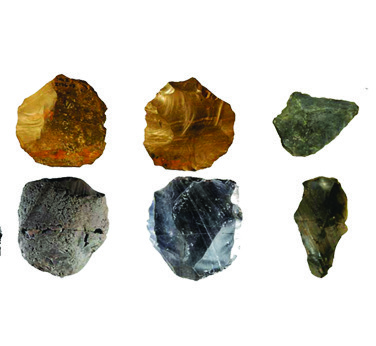

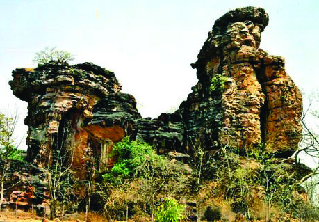
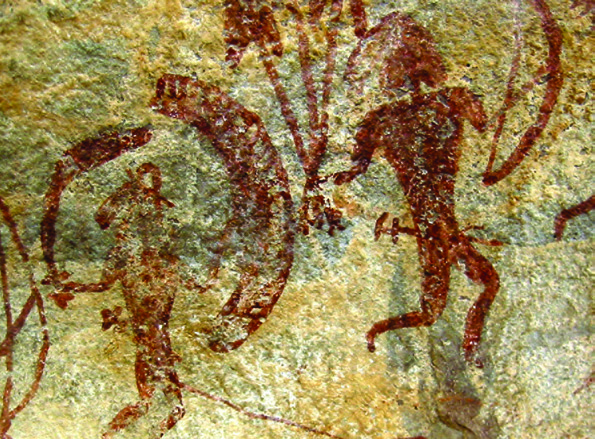

സാാമൂൂഹ്യയശാാസ്ത്രംം ക്ലാാസ്
സാാമൂൂഹ്യയശാാസ്ത്രംം ക്ലാാസ് VI
VI
11
ആദിിമ മനുുഷ്യയരും�ം സംംസ്കാാരങ്ങളും�ം
ആദിിമ മനുുഷ്യയരും�ം സംംസ്കാാരങ്ങളും�ം
ചിത്രംം 1.2
ചിത്രംം 1.4
ചിത്രംം 1.3
മധ്യയ ശിലാായുഗംം
പ്രാാചീീന ശിലാായുഗംം
നവീീന ശിലാായുഗംം
സൂക്ഷ്മ ശിലാ ഉപകരണ
ങ്ങൾ ഉപയോ�ോഗിിച്ചു
ശിലായുഗത്തിിലെെ ആദ്യയഘട്ടം
കൂൂടുതൽ പരിിഷ്്കരിിക്കപ്പെƀട്ടതുംം� മിനുുസമുുളളതുുമായ കല്ലുപ
കരണ
ങ്ങൾ ഉപയോ�ോഗിിച്ചു
ഭക്ഷ്യയോ�ോഗ്യമായ പുല്ലിനങ്ങളും�ം മത്സ്യയവുംം� ഭക്ഷണമാ
ാക്കി
പരുുക്കൻ കല്ലുകൾ ഉപകരണ
ങ്ങളാാക്കി
കൃഷി ആരംഭിച്ചു
മൃഗത്തോ�ോലുംം� മരത്തോ�ോലുംം� ഇലകളും�ം വസ്ത്രങ്ങളാാക്കി
ശേ�ഖരണവുംം� വേ�ട്ടയാടലുംം� ഉപജീീവനമാാക്കി
ചക്രം കണ്ടുപിടിക്കുകയുംം� മൺപാാത്രനിർമ്മാാണം ആരംഭി
ക്കുകയുംം� ചെ�യ്തുു
ഭിം�ംബേ�ഡ്ക
ശിലായുഗ മനുുഷ്യയർ അധിവസിിച്ചിിരുന്ന ഇന്ത്യയിലെെ ഒരു പ്രധാാന ഗുഹാകേ�ന്ദ്ര
മാണ് മധ്യപ്രദേ�ശി
ിലെെ ഭിം�ംബേ�ഡ്്ക. പ്രാചീന മനുുഷ്യയരുടെെ വിിവിിധ ജീീവിിതരീീ
തികളെ�ക്കു
ുറിച്ച് ഇവിിടുത്തെ� ഗുഹാചിത്രങ്ങൾ നമ്മോ�ോട്
് പറയുുന്നു. അവരുുടെെ
ആശയവിിനിമയത്തിിന്റെെź തെ�ളിിവുകൾകൂൂടിയാണ് ഈ ഗുഹാചിത്രങ്ങൾ.
ഭിം�ംബേ�ഡ്ക
ഗുഹാാചിിത്രങ്ങൾ
വിിവിിധ ശിലായുഗഘട്ടങ്ങളുടെെ സവിിശേ�ഷതക
ൾ ശ്രദ്ധിക്കൂ.
Page 12


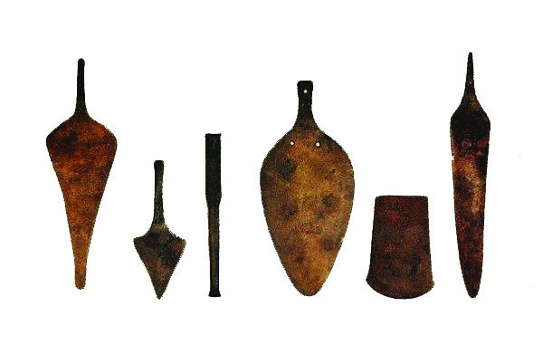
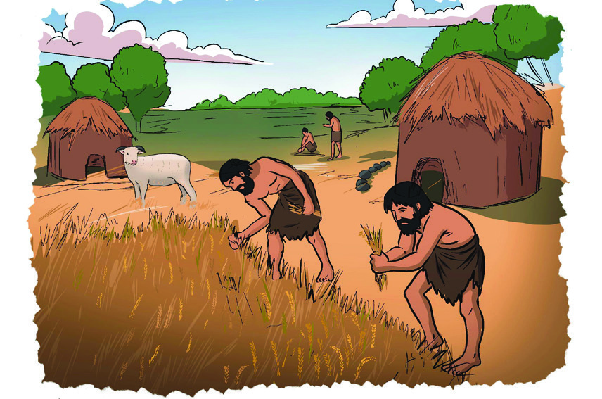
സാാമൂൂഹ്യയശാാസ്ത്രംം ക്ലാാസ്
സാാമൂൂഹ്യയശാാസ്ത്രംം ക്ലാാസ് VI
VI
12
ഭാാഗംം
ഭാാഗംം 1
പ്രാചീന ശിലായുഗം, മധ്യയ ശിലായുഗം, നവീീന ശിലായുഗം എന്നിവയുുടെെ പ്രത്യേ�േ
കതകൾ സ്ട്രിപ്പുകളിൽ എഴുതി ബൗളിൽ വയ്ക്കുക. വിിവിിധ ശിലായുഗങ്ങളുടെെ
പേേരുകൾ എഴുതിയ ചാർട്ടുകൾ ക്ലാാസിൽ ക്രമീീകരിക്കുക. കുട്ടികൾ സ്ട്രിപ്പുകൾ
എടുത്ത് ഉചിതമാായ രീതിയിൽ ചാർട്ടിൽ ഒട്ടിക്കുക.
വാസസ്ഥലങ്ങൾ നിർമ്മിച്ചു തുുടങ്ങി
സ്ഥിരവാസ കേsന്ദ്രങ്ങൾ ക്രമേ�ണ
ഗ്രാമങ്ങളായുംം�
നഗരങ്ങളായുംം� വിികാസം പ്രാപിച്ചു
ജനങ്ങൾ തമ്മിൽ കൂടുതൽ ഇടപഴകാാൻ തുുട
ങ്ങുകയുംം� സംഘടിത സാമൂൂഹികജീീവിിതത്തിിന്
തുുടക്കംം കുറിക്കുകയുംം� ചെ�യ്തു�
സ്ഥിരവാസവുംം�
മാറ്റങ്ങളും�ം
മുകളിൽ നൽകിയിരിക്കുന്ന ചിത്രങ്ങൾ നിരീക്ഷിിക്കൂ. ഇവ ഏത് വസ്തുക്കൾകൊൊsൊണ്ടാാണ് നിർമ്മി
ച്ചിിരിക്കുന്നത്്?
•
•
ചിത്രം 1.5
സ്ഥിരവാസം മനുുഷ്യയരിൽ എന്തൊ�ൊക്കെ� മാറ്റങ്ങൾ ഉണ്ടാാക്കിയിട്ടുണ്ടാാവാംം?
ശിലയിൽ നിന്നുംം� ലോോഹത്തിിലേേക്ക്
ചിത്രം 1.6
കൃഷിയുടെെ ആരംഭവുംം� സ്ഥിരവാാസവുംം�
കൃഷിയുടെെ ആരംഭം നവീീനശി
ിലായുഗത്തിിലാ
ണെ�ന്ന്് നിങ്ങൾ കണ്ടല്ലോ�ോ. കൃഷി ചെ�യ്യാാൻ
ആരംഭിച്ച മനുുഷ്യയർക്ക് കൃഷിയിടങ്ങൾക്ക് സമീപ
ത്തായി സ്ഥിരവാസം അനിവാര്യയമായി വന്നു. കൃഷി
പരിപാലിക്കാാനുംം� കൃഷിയിടങ്ങളെ� വന്യയജീീവിികളിൽ
നിന്ന് സംരക്ഷിിക്കാാനുംം� മൃഗപരിപാലനത്തിിനുുമായി
അവർ കൃഷിയിടങ്ങൾക്ക് സമീപത്താായി സ്ഥിരവാ
സമുറപ്പിച്ചു.
Page 13


സാാമൂൂഹ്യയശാാസ്ത്രംം ക്ലാാസ്
സാാമൂൂഹ്യയശാാസ്ത്രംം ക്ലാാസ് VI
VI
13
ആദിിമ മനുുഷ്യയരും�ം സംംസ്കാാരങ്ങളും�ം
ആദിിമ മനുുഷ്യയരും�ം സംംസ്കാാരങ്ങളും�ം
ശിലാായുഗത്തിലെ�യുംം� വെ�ങ്കലയുഗത്തിലെ�യുംം� മനുുഷ്യജീീവിതത്തിറെź സവിശേേഷ
തകൾ താാരതമ്യം�ം ചെ�യ്ത്് കുറിപ്പ് തയ്യാാറാാക്കൂ.
മനുുഷ്യർ ആദ്യം�ം ഉപയോോഗിച്ച ലോ�ോഹം ഏതാാണെ�ന്ന് നിങ്ങൾക്ക് അറിയാാമോ�ോ?
ചെ�മ്പാായിിരുുന്നു മനുുഷ്യർ ആദ്യം�ം ഉപയോോഗിച്ച ലോ�ോഹം. ലോ�ോഹങ്ങൾ കൊ�ൊണ്ട് ആയുധങ്ങ
ളും�ം ഉപകരണങ്ങളും�ം നിർമ്മിച്ച് ഉപയോോഗിച്ചിിരുുന്ന കാാലഘട്ടത്തെെĹ ലോ�ോഹയുുഗം എന്നാാണ്
്
വിളിക്കുുന്നത്. മണ്ണ് ഉഴുതുുമറിിക്കാാനുംം� മരങ്ങൾ മുുറിക്കാാനുുമൊ�ൊക്കെ�യുുളള കാാഠിിന്യവുംം� ഉറപ്പുംം�
ചെ�മ്പിിന് കുറവാായതിനാാൽ ചെ�മ്പുംം� ഈയവുംം� കൂട്ടിച്ചേ�ർത്ത് കാാഠിിന്യവുംം� ഉറപ്പുമുുളള വെ�ങ്കലം
എന്ന ലോ�ോഹസങ്കരം അവർ നിർമ്മിച്ചു. വെ�ങ്കലം കൊ�ൊണ്ടുളള ആയുധങ്ങളും�ം ഉപകരണങ്ങളും�ം
ഉപയോോഗിച്ചിിരുുന്ന കാാലഘട്ടം വെ�ങ്കലയുഗം എന്ന് അറിയപ്പെെƀടുന്നു.
വെ�ങ്കലം കൊ�ൊണ്ടുളള ഉപകരണങ്ങൾ ഉപയോോഗിക്കാാൻ ആരംഭിച്ചതോ�
ോടെെ മനുുഷ്യജീീവിതത്തിൽ
കാാതലാായ മാാറ്റങ്ങളുണ്ടാായി. അവ എന്തൊ�ൊക്കെ�യെെന്ന് നോ�ോക്കാം.
വെ�ങ്കലയുഗ സംസ്കാാരങ്ങൾ
ഈജിപ്ഷ്യൻ
ഹരപ്പൻ
ചൈൈനീീസ്
മെെസൊ�ൊപ്പൊƀൊട്ടേ�മിിയൻ
വെ�ങ്കലയുുഗ
സംസ്കാാരങ്ങൾ
വെ�ങ്കലയുഗത്തിൽ
മനുുഷ്യജീീവിത
ത്തിലുണ്ടാായ മാാറ്റങ്ങൾ നിങ്ങൾ കണ്ട
ല്ലോ�ോ. ഈ മാാറ്റങ്ങളുടെെ ഫലമാായി
നഗരങ്ങൾ കേ�ന്ദ്രീീകരിിച്ച് വെ�ങ്കലയുഗ
ത്തിൽ സംസ്കാാരങ്ങൾ (Civilizations)
രൂപപ്പെെƀട്ടു. അത്തരത്തിൽ രൂപപ്പെെƀട്ട
വെ�ങ്കലയുഗ സംസ്കാാരങ്ങളെ� നമുുക്ക്
പരിചയപ്പെെƀടാം�.
വെ�ങ്കലത്തിറെź
ഉപയോോഗം _
മനുുഷ്യജീീവിത
ത്തിലുണ്ടാായ
മാാറ്റങ്ങൾ
കൈൈമാാറ്റകേ�ന്ദ്രങ്ങൾ പിൽക്കാാലത്ത് പട്ടണങ്ങളാായുംം� നഗരങ്ങ
ളാായുംം� രൂപാാന്തരപ്പെെƀട്ടു
വെ�ങ്കലം കൊ�ൊണ്ടുള്ള ഉപകരണങ്ങൾ കൃഷിയിടങ്ങൾ വ്യാാ�പിപ്പി
ക്കുുന്നതിന് സഹാായകമാായിി
കൃഷിയിടങ്ങളുടെെ വ്യാാ�പനം കാാർഷികോ�ോൽപാാദന വർധനവിിന്
കാാരണമാായി
കാാർഷികോ�ോൽപാാദന വർധനവ്് ഉൽപന്നങ്ങളുടെെ കൈൈമാാറ്റത്തി
നുംം� കൈൈമാാറ്റകേ�ന്ദ്രങ്ങളുടെെ വികാാസത്തിനുംം� വഴിിയൊൊരുുക്കി
Page 14

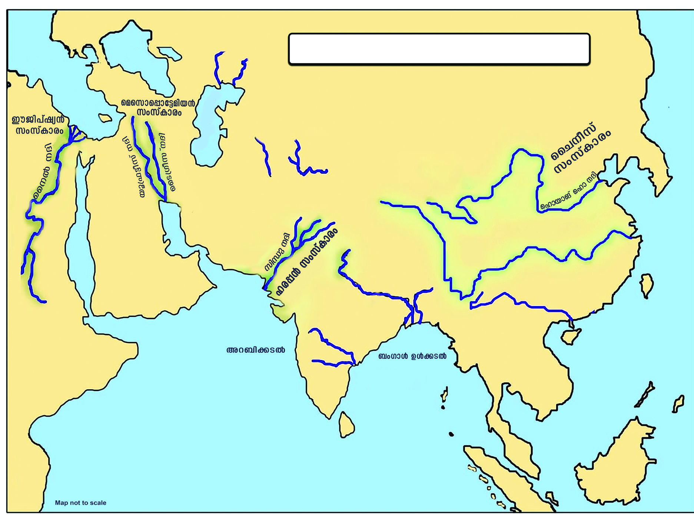
സാാമൂൂഹ്യയശാാസ്ത്രംം ക്ലാാസ്
സാാമൂൂഹ്യയശാാസ്ത്രംം ക്ലാാസ് VI
VI
14
ഭാാഗംം
ഭാാഗംം 1
ഭൂപടം 1.1 നിരീക്ഷിിച്ച് പ്രധാാന വെ�ങ്കലയുഗ സംസ്കാാരങ്ങൾ വിികസിച്ചുവന്ന
നദീീതടങ്ങൾ കണ്ടെ�ത്തിി പട്ടിക പൂർത്തിിയാക്കൂ.
സംസ്കാാരം
സംസ്കാാരം
നദിികൾ
മെെസൊ�ൊപ്പൊ�ൊട്ടേ�മിിയൻ
ഈജിപ്ഷ്യയൻ
ഹരപ്പൻ
ചൈൈനീീസ്
വെ�ങ്കലയുഗത്തിിൽ നിലനിിന്നിരുന്ന നാല് പ്രധാാന സംസ്കാാരങ്ങളെ� ചുവടെെ നൽകിയിരിക്കുന്ന
ഭൂപടത്തിിൽ കണ്ടെ�ത്തൂൂ.
ഭൂപടം 1.1
വെ�ങ്കലയുഗ സംസ്കാാരങ്ങൾ
Page 15
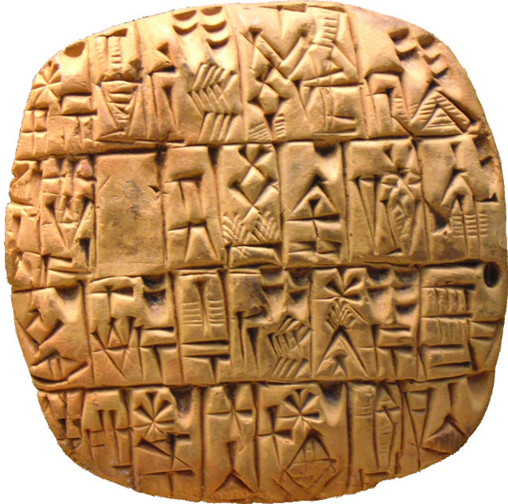
സാാമൂൂഹ്യയശാാസ്ത്രംം ക്ലാാസ്
സാാമൂൂഹ്യയശാാസ്ത്രംം ക്ലാാസ് VI
VI
15
ആദിിമ മനുുഷ്യയരും�ം സംംസ്കാാരങ്ങളും�ം
ആദിിമ മനുുഷ്യയരും�ം സംംസ്കാാരങ്ങളും�ം
മെെസൊ�ൊപ്പൊƀൊട്ടേ�മിിയൻ സംസ്കാാരംം
ഭൂപടം 1.1 നിരീക്ഷിച്ച് മെെസൊ�ൊപ്പൊƀൊട്ടേ�മിിയയുടെെ സ്ഥാാനംം കണ്ടെെĬത്തൂ.
ഏതൊ�ൊക്കെ� നദിികൾക്കിടയിലാാണ് മെെസൊ�ൊപ്പൊƀൊട്ടേ�മിിയ സ്ഥിതി ചെ�യ്യുുന്നത്?
•
•
‘മെെസൊ�ൊപ്പൊƀൊട്ടേ�മിിയ’ എന്ന വാാക്കിറെź അർഥം ‘നദിികൾക്കിടയിലെ� പ്രദേ�ശംം’ എന്നാാണ്
്.
യൂഫ്രട്ടീസ്, ടൈൈഗ്രീസ് എന്നീ നദിികൾക്കിടയിലാാണ് ഈ പ്രദേ�ശംം സ്ഥിതിചെ�യ്യുുന്നത്.
നിലവിൽ ഇറാാഖിറെź ഭാാഗമാാണ് ഈ പ്രദേ�ശംം. സുമേ�റിിയൻ, ബാാബിിലോ�ോണിയൻ, അസീറിയൻ,
കാാൽഡിിയൻ എന്നിങ്ങനെ� നാാല് വ്യത്യസ്ത സംസ്കാാരങ്ങൾ കൂടിച്ചേ�ർന്നതാായിരുുന്നു മെെസൊ�ൊപ്പൊƀൊ
ട്ടേ�മിിയൻ സംസ്കാാരംം.
നഗരജീീവിതവുംം� എഴുുത്തുവിദ്യയുംം�
മെെസൊ�ൊപ്പൊƀൊട്ടേ�മിിയയിൽ നഗരജീീവിതം കെ�ട്ടിിപ്പടുക്കാാൻ സംഭാാവന നൽകിയ ആദ്യ ജനത
സുമേ�റിിയക്കാാരാായിരുുന്നു. മെെസൊ�ൊപ്പൊƀൊട്ടേ�മിിയൻ സംസ്കാാരത്തിലെ� പ്രധാാന നഗരങ്ങളാായിരുുന്നു
ഉർ, ഉറൂക്ക്, ലഗാാഷ് മുുതലാായവ.
മെെസൊ�ൊപ്പൊƀൊട്ടേ�മിിയക്കാാരുുടെെ എഴുത്ത് സമ്പ്രദാായം ക്യൂൂ�ണിഫോംം എന്ന് അറിയപ്പെെƀട്ടു.
ഫലഭൂയിഷ്ഠമാായ മണ്ണ്
ജലലഭ്യത
അനുുകൂല കാാലാാവസ്ഥ
എന്തുുകൊsൊണ്ട്്
നദീീതടങ്ങളിിൽ?
ഈ ലിപി വികസി
ിപ്പിച്ചത്് സുമേ�റിിയക്കാാരാാണ്
ചിിത്രംം 1.7
ക്യൂൂ�ണിഫോംം ലിപി
ആപ്പിറെź ആകൃതിയിലുള്ള (Wedge-shaped) ചിിത്ര
ലിപിയാാണിത്
കളിിമൺ ഫലകങ്ങളിലാാണ് അവർ എഴുതിയിരുുന്നത്
കൂർത്ത മുുനയുുള്ള ഈറത്തണ്ടുകളാാണ് കളിിമൺ ഫല
കങ്ങളിൽ എഴുതാാൻ അവർ ഉപയോോഗിച്ചിിരുുന്നത്
വെ�ങ്കലയുഗ സംസ്കാാരങ്ങൾ നദീീതടങ്ങളിൽ രൂപപ്പെെƀട്ടത് എന്തുകൊ�ൊണ്ടാായിരിക്കാം?
Page 16
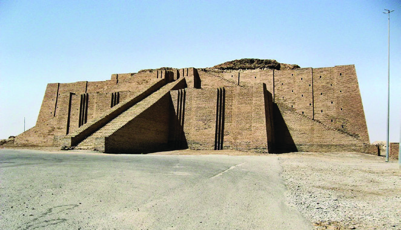


സാാമൂൂഹ്യയശാാസ്ത്രംം ക്ലാാസ്
സാാമൂൂഹ്യയശാാസ്ത്രംം ക്ലാാസ് VI
VI
16
ഭാാഗംം
ഭാാഗംം 1
സിഗുറാാത്ത്
ഹമ്മുുറാാബിയുടെെ നിയമസം
ംഹിത
ബാബിിലോോണിിയൻ ഭരണാധികാരിയായിരുന്ന ഹമ്മുറാാബിി
യുടെെ (ബിി.സി.ഇ. 1792-1750) കാലഘട്ടത്തിിൽ നിലനിിന്നി
രുന്ന നിയമസം
ംഹിതയാാണിിത്. ലോോകത്ത്് എഴുതപ്പെ�ട്ടതിൽ
ഏറ്റവുംം� പഴക്കമേ�റിിയ നിയമസം
ംഹിതയാായി ഇതറിിയപ്പെ�
ടുന്നു. “കണ്ണിിന് കണ്ണ്്, പല്ലിിന് പല്ല്്” എന്ന ശിക്ഷാരീതി ഈ നിയമ
സംഹിതയിിൽ നിന്നുള്ളതാാണ്.
ഈജിപ്ഷ്യൻ സംസ്കാാരം
ഭൂപടം 1.1 നിരീക്ഷിിക്കൂ. ഈജിപ്ഷ്യയൻ സംസ്കാാരം നിലനിിന്നിരുന്ന പ്രദേ�ശം
ം കണ്ടെ�ത്തൂൂ.
നൈൈൽ നദീീതടത്തിിലാണ് ഈജിപ്ഷ്യയൻ സംസ്കാാരം നിലനിിന്നിരുന്നത്് എന്ന് നിങ്ങൾ
കണ്ടല്ലോ�ോ. ഈജിപ്ഷ്യയൻ സംസ്കാാരത്തിിലെ പ്രധാാന നഗരം കെsയ്റോ�ോ ആയിരുന്നു.
മെെസൊ�ൊപ്പൊ�ൊട്ടേ�മിിയക്കാാരുടെെ സാംംസ്കാാരിക സംഭാവനകളെ�ക്കുറിച്ച് ഒരു കുറിപ്പ്്
തയ്യാാറാാക്കൂ.
ശാാസ്ത്രവുംം�
ഗണിതവുംം�
• ചാന്ദ്രപഞ്ചാംംഗം
• സൂര്യയഗ്രഹണവുംം�
ചന്ദ്രഗ്രഹണവുംം�
കണക്കാാക്കി
• ഹരണവുംം�
ഗുണനവ
ും
മെെസൊ�ൊപ്പൊ�ൊട്ടേ�മി
ിയക്കാരുടെെ സംഭാാവനകൾ
നിയമം
• സുമേ�റിിയൻ
ഭരണാ
ധികാരിയായിരുന്ന
ഡുൻഗിയുടെെ കാലഘ
ട്ടത്തിിലാണ് നിയമങ്ങൾ
ആദ്യയമാ
ായി ക്രോ�ോഡീ
ീകരി
ക്കപ്പെ�ട്ടത്
• ഈ നിയമങ്ങൾ പരി
ഷ്കരിച്ചത
ാണ് ഹമ്മു
ു
റാബിയുടെ നിയമസം
ഹിത
സിഗുറാാത്തുകൾ
മെെസൊ�ൊപ്പൊ�ൊട്ടേ�മിിയക്കാാരുടെെ
ആരാധനാാലയങ്ങൾ
'സിഗുറാാത്തുകൾ'
എന്നാാണ്
അറിയപ്പെ�ട്ടിരുന്നത്്.
പ്രധാാനമാായുംം� നഗരങ്ങളിലാണ് ഈ ആരാധനാാല
യങ്ങൾ പണിിതിരുന്നത്്. ഇഷ്ടികകൾ ഉപയോ�ോഗി
ച്ചാണ് ഇവ നിർമ്മിച്ചത്്. 'ഉർ' നഗരത്തിിലെ 'സിഗു
റാാത്ത്' ഇന്നുംം� സംരക്ഷിിക്കപ്പെ�ടുുന്നു.
Page 17

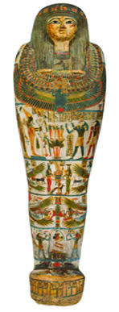
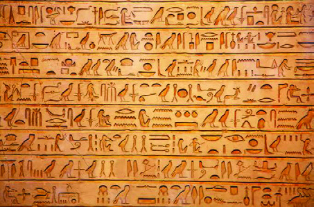

സാാമൂൂഹ്യയശാാസ്ത്രംം ക്ലാാസ്
സാാമൂൂഹ്യയശാാസ്ത്രംം ക്ലാാസ് VI
VI
17
ആദിിമ മനുുഷ്യയരും�ം സംംസ്കാാരങ്ങളും�ം
ആദിിമ മനുുഷ്യയരും�ം സംംസ്കാാരങ്ങളും�ം
ചിിത്രംം 1.8
ഈജിപ്ഷ്യയൻ ഫറവോ�ോ
മമ്മിി
പിരമിിഡുകൾ
ഈജിപ്ഷ്യൻ സംസ്കാാരത്തിറെź പ്രധാാന
സവിശേേഷതയാാണ് ഫറവോ�ോമാാരുുടെെ ശവ
കുടീരങ്ങളാായ പിരമിിഡുകൾ. ഗിസയിലെ�
മഹത്താായ പിരമിിഡ് ഏറ്റവുംം� വലുതുംം�
പ്രശസ്തവുുമാാണ്.
മമ്മിികൾ
മൃതദേ�ഹം
ം സുഗന്ധദ്രവ്യങ്ങൾ പൂശി അനശ്വരമാായിി സൂക്ഷി
ക്കുുന്ന സമ്പ്രദാായം ഈജിപ്തുുകാാർക്ക് ഉണ്ടാായിരുുന്നു. ഇപ്രകാാ
രം സൂക്ഷിച്ചിിരുുന്ന മൃതദേ�ഹമാാണ്
് ‘മമ്മി’ എന്നറിയപ്പെെƀടുന്നത്.
ഫറവോ�ോ ആയിരുുന്ന തൂത്തൻഖാാമന്റെറെź മമ്മിയാാണ് ഇവയിൽ
ഏറ്റവുംം� പ്രശസ്തമാായത്്. പിരമിിഡുകൾക്കുുള്ളിലാാണ് ഇത്തരം
മമ്മികൾ സൂക്ഷിച്ചിിരുുന്നത്.
ഈജിപ്തിലെ� രാാജാാക്കൻമാാർ ‘ഫറവോ�ോ’ എന്ന പേ�രിിലാാണ് അറിയപ്പെെƀ
ട്ടിരുുന്നത്. ഈ സംസ്കാാരത്തിറെź പ്രധാാന സവിശേേഷതയാാണ് പിരമിി
ഡുകൾ.
കൃഷിയാായിരുുന്നു ജനങ്ങളുടെെ പ്രധാാന ജീീവിതമാാർഗം. ഗോ�ോതമ്പ്്, ബാാർലി,
തിന, പഴവർഗങ്ങൾ, ചണം
ം, പരുുത്തി മുുതലാായവ നൈൈൽ നദീീതടത്തിൽ
സമൃദ്ധമാായി
ി വളർന്നിരുുന്നു. ഈ കാാർഷിക സമൃദ്ധിിയാാണ് നൈൈൽ നദീീ
തടത്തിൽ ഒരുു നാാഗരിക സംസ്കാാരംം വളർന്നുവരാാൻ ഇടയാാക്കിയത്്.
അതിനാാൽ ഈജിപ്തിനെ� ‘നൈൈലിിറെź ദാാനം’ എന്ന് വിശേേഷിപ്പിക്കുുന്നു.
ഹൈൈറോോഗ്ലിിഫിിക്്സ്്
ലിിപിി
പുരാാതന ഈജിപ്തുുകാാരുുടെെ
എഴുത്ത് ലിപി ഹൈൈറോ�ോഗ്ലി
ഫിക്സ് ആയിരുുന്നു
'വിശുദ്ധമാായ
എഴുത്ത്'
എന്നാാണ്
് 'ഹൈൈറോ�ോഗ്ലിഫി
ക്സ്' എന്ന വാാക്കിറെź
അർഥം
ചിിഹ്നരൂപവുംം� അക്ഷര
രൂപവുംം� കൂടിച്ചേ�ർന്ന
ലിപിയാാണിത്
വലത്തുനിന്ന് ഇടത്തോĹോ
ട്ടാാണ്
് വാായിച്ചിിരുുന്നത്
എഴുുത്തുവിദ്യ
മെെസൊ�ൊപ്പൊ�ൊട്ടേĞമിയയിലേ�തുുപോ�ോലെ�
ഈജിപ്തിിലുംം�
എഴുുത്തുവിദ്യ
നിലനിിന്നിരുുന്നു.
ഈജിപ്ഷ്യയൻ എഴുുത്തുവിദ്യയുടെെ സവിിശേ�ഷതകൾ എന്തൊŦൊക്കെെÚയാാണെ�ന്ന് നമുുക്ക് നോ�ോക്കാം.
Page 18


സാാമൂൂഹ്യയശാാസ്ത്രംം ക്ലാാസ്
സാാമൂൂഹ്യയശാാസ്ത്രംം ക്ലാാസ് VI
VI
18
ഭാാഗംം
ഭാാഗംം 1
ഇപ്പോ�ോൾ നാംം ഉപയോ�ോഗിക്കുന്ന കലണ്ടറിിൽ എത്ര മാസങ്ങളാണുളളത്? ഓരോ�ോ മാ
സത്തിിലുംം� മുപ്പത്് ദിവസങ്ങളാണോ�ോ ഉള്ളത്്? നിങ്ങളുടെെ വീട്ടിലെ കലണ്ടർ നിരീ
ക്ഷിിച്ച് ഓരോ�ോമാാസത്തിിലുംം� എത്ര ദിവസങ്ങൾ വീതമാാണുള്ളത്് എന്ന് കണ്ടെ�ത്തിി
എഴുതൂ.
ചിത്രം 1.9- ചൈൈനീസ് ലിപി
മെെസൊ�ൊപ്പൊ�ൊട്ടേ�മിിയ, ഈജിപ്ത്, ചൈൈന എന്നിവിിടങ്ങളിൽ നിലനിിന്നിരുന്ന എഴുത്ത്
രീതിയുടെെ പ്രത്യേ�േകതക
ൾ കണ്ടെ�ത്തിി പട്ടിക പൂർത്തിിയാക്കൂ.
സംസ്കാാരങ്ങൾ
ലിപി
പ്രത്യേ�േകതകൾ
മെെസൊ�ൊപ്പൊ�ൊട്ടേ�മിിയ
............................................. .............................................
ഈജിപ്ത്
............................................. .............................................
ചൈൈന
............................................. .............................................
ശാാസ്ത്രനേ�ട്ട
ങ്ങൾ
ഗണിിതവുംം� വൈൈദ്യയശാാസ്ത്രവുംം�
ഈജിപ്തിൽ പുരോ�ോഗതി കൈൈവരിിച്ചിിരുന്നു. ഗണിിതശാാസ്ത്ര
ത്തിിലെ ജ്യാDzാമിതിക്ക് അടിസ്ഥാാനമിിട്ടത് ഈജിപ്തുകാരായിരുന്നു. സങ്കലനംം, വ്യയവകലനം
എന്നിവ ഇവരുുടെെ സംഭാവനകളാ
ായിരുന്നു. മുപ്പത്് ദിവസം
ം വീതമുുളള പന്ത്രണ്ട് മാസങ്ങളോ�ോ
ടൊ�ൊപ്പംം അഞ്ച് ദിവസം
ം കൂട്ടിച്ചേ�ർത്ത 365 ദിവസങ്ങൾ അടങ്ങിയ ഒരു വർഷമാാണ് ഇവരുുടെെ
സൗരപഞ്ചാംംഗത്തിിൽ (Solar Calender) ഉൾപ്പെ�ട്ടിട്ടുളളത്.
ചൈൈനീസ് സംസ്കാാരം
'ഹൊ�ൊയാാങ്് ഹോ�ോ' നദീീതടത്തിിലാണ് ചൈൈനീീസ് സംസ്കാാരം ഉടലെടുത്തത്്. കൃഷിയായിരുന്നു ഈ
സംസ്കാാരത്തിിന്റെźയുംം� അടിത്തറ. കൂടാതെ� നെ�യ്്ത്ത്്, മൺപാത്ര
നിർമ്മാാണം, പട്ടുവസ്ത്ര നിർമ്മാാണം എന്നിവയിിലുംം� അവർ വിിദഗ്്ധ
രായിരുന്നു. മികവുുറ്റ വെ�ങ്കല ശില്പങ്ങൾ അവർ നിർമ്മിച്ചിിരുന്നു.
എഴുത്ത് സമ്പ്രദാായം
ചൈൈനക്കാാരുടെെ ഇടയിൽ പുരാതനകാാലം മുതൽതന്നെ� എഴുത്ത്
സമ്പ്രദാായം നിലവിിലുണ്ടാായിരുന്നു. അക്ഷരങ്ങൾക്ക് പകരം ചിത്ര
ങ്ങൾ ഉപയോ�ോഗിക്കുന്ന ചിത്രലിപിയായിരുന്നു പ്രചാാരത്തിിലുണ്ടാാ
യിരുന്നത്്. കാലക്രമത്തിിൽ അവർ ചിത്രങ്ങൾക്ക് പകരം ചിഹ്നങ്ങൾ
രൂപപ്പെ�ടുുത്തിി. മാറ്റങ്ങളോ�ോടെെ ആ ലിപി ഇന്നുംം� ചൈൈനയിിൽ നില
നിൽക്കുന്നു.
ഹരപ്പൻ സംസ്കാാരം
വെ�ങ്കലയുഗത്തിിൽ സിന്ധുനദീീതടത്തിിൽ നിലനിിന്നിരുന്ന സംസ്കാാരമാണ് ഹരപ്പൻ സംസ്കാാരം.
ഏകദേ�ശംം ബിി.സി.ഇ. 2600 മുതൽ ബിി.സി.ഇ. 1900 വരെെയാാണ് ഈ സംസ്കാാരത്തിിന്റെź കാലഘട്ടമാ
യി പൊൊതുുവെ� കരുതപ്പെ�ടുുന്നത്്. ഹരപ്പയാാണ് ആദ്യയമാ
ായി കണ്ടെ�ത്തിിയ നഗരം. അതിനാലാണ്
ഈ സംസ്കാാരത്തെ� ഹരപ്പൻ സംസ്കാാരം എന്ന് വിിളിക്കുന്നത്്. ഈ സംസ്കാാരം ഉടലെടുത്തത്് സിന്ധു
Page 19


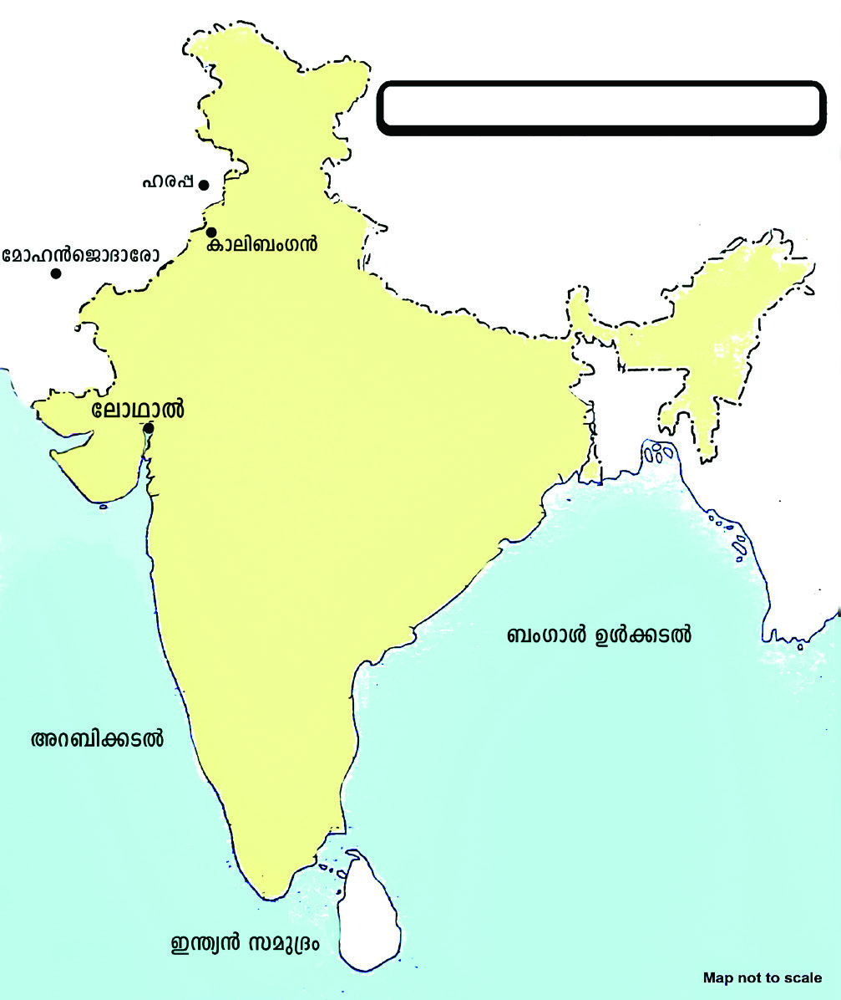
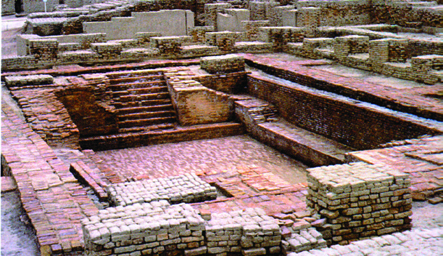
സാാമൂൂഹ്യയശാാസ്ത്രംം ക്ലാാസ്
സാാമൂൂഹ്യയശാാസ്ത്രംം ക്ലാാസ് VI
VI
19
ആദിിമ മനുുഷ്യയരും�ം സംംസ്കാാരങ്ങളും�ം
ആദിിമ മനുുഷ്യയരും�ം സംംസ്കാാരങ്ങളും�ം
സർ ജോ�ോൺ മാർഷൽ
ഇന്ത്യയയിൽ പുരാവസ്തു
ക്കളുുടെെ ഉൽഖനനത്തിി
നുംം� സംരക്ഷണ
ത്തിിനുു
മായി രൂപീകരിക്കപ്പെ�ട്ട
സ്ഥാാപനമാാണ് 'ആർക്കി
യോ�ോളജിക്കൽ സർവേ�
ഓഫ്
ഇന്ത്യയ'
(ASI).
1902 മുതൽ 1928 വരെെ 'ആർക്കിയോ�ോ
ളജിക്കൽ സർവേ� ഓഫ് ഇന്ത്യയ' യുടെെ
ഡയറക്ടർ ജനറ
ൽ ആയിരുന്നു സർ
ജോ�ോൺ മാർഷൽ. ഇദ്ദേേŔഹത്തിിന്റെź നേ�
തൃത്വവത്തിിൽ നടന്ന ഗവേ�ഷണ
ങ്ങളാണ്
ഹരപ്പൻ സംസ്കാാരത്തെ� കണ്ടെ�ത്തിിയത്.
ഭൂപടം 1.2 നിരീക്ഷിിച്ച് ഹരപ്പൻ സംസ്കാാരത്തിിലെ പ്രധാാന നഗരങ്ങൾ കണ്ടെ�ത്തിി
പട്ടികപ്പെ�ടുുത്തൂ.
• മോ�ോഹ
ൻജൊ�ാദാാരോ�ോ
•
•
•
നദീീതീരത്തായതിനാൽ സിന്ധുനദീീതട സം
സ്കാാരം എന്നുംം� അറിയപ്പെ�ടുുന്നു. നഗരങ്ങൾ
കേsന്ദ്രീകരിച്ചാണ് ഈ സംസ്കാാരം വളർന്നു
വന്നത്്. അതിനാൽ ഇന്ത്യയയിലെ ഒന്നാംം
നഗരവൽക്കരണം എന്ന് ഈ സംസ്കാാരത്തെ�
വിിശേ�ഷിിപ്പിക്കുന്നു.
നഗരാസൂത്രണം (Town Planning)
ഹരപ്പൻ സംസ്കാാരത്തിിന്റെź പ്രധാാന സവിിശേ�ഷതയാ
ാണ് നഗരാസൂത്രണം. തെ�രുുവുകളുടെെ ഇരു
വശങ്ങളിലുമായാണ് അവർ വീടുകൾ നിർമ്മിച്ചിിരുന്നത്്. ചുട്ടെെടുത്ത ഇഷ്ടികകളാണ് നിർമ്മാാണ
പ്രവർത്തനങ്ങൾക്കാായി അവർ ഉപയോ�ോഗിച്ചിിരുന്നത്്. അഴുക്കുചാൽ സമ്പ്രദാായം ഹരപ്പൻ
സംസ്കാാരത്തിിന്റെź മറ്റൊ�ൊരു
ു പ്രധാാന സവിിശേ�ഷതയാ
ായിരുന്നു. വീടുകളിൽ നിന്നുള്ള മലിിനജലംം
തെ�രുുവിിലെ അഴുക്കുചാലുകളിലൂടെെ നഗരത്തിിന് പുറത്തേ�ക്ക്
് ഒഴുക്കികൊൊsൊണ്ടുുപോോകുന്ന തര
ത്തിിലായിരുന്നു നഗരങ്ങളുടെെയുംം� അഴുക്കുചാലുകളുടെെയുംം� ആസൂത്രണം.
മോ�ോഹ
ൻജൊ�ാദാാരോ�ോയിിലെ� വലിിയ കുളംം (Great Bath)
ഹരപ്പൻ
സംസ്കാാരത്തിിലെ
പ്രധാാന
നഗരമായിരുന്നു
മോ�ോഹ
ൻജൊ�ാദാാരോ�ോ. വലിിയ കുളമാണ് ഈ നഗരത്തിിലെ
ഏറ്റവുംം� സവിിശേ�ഷമാായ നിർമ്മിതി. ഈ കുളത്തിിലേേക്കി
റങ്ങാൻ ഇരുവശങ്ങളിലുംം� പടവുുകളും�ം കുളിക്കുവാനായി
കുളിമുറികളും�ം ഉണ്ടാായിരുന്നു. ശുദ്ധജലംം നിറയ്ക്കാനുംം� മലിിന
ജലംം പുറത്തേ�യ്ക്കൊ�ൊഴു
ുക്കാാനുുമുള്ള സംവിിധാാനവുംം� ഇവിിടെെ
നിലനിിന്നിരുന്നു.
ചിത്രം 1.10 -
ചിത്രം 1.10 - വലിിയ കുളത്തിന്റെ്റെź
അവശിിഷ്ടങ്ങൾ
ഭൂപടം 1.2
ഹരപ്പൻ സംസ്കാാരം
Page 20


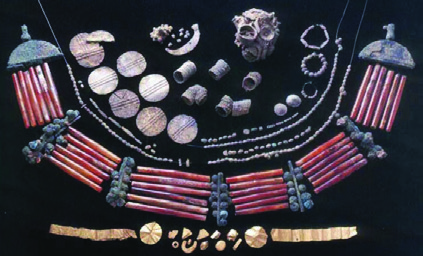
സാാമൂൂഹ്യയശാാസ്ത്രംം ക്ലാാസ്
സാാമൂൂഹ്യയശാാസ്ത്രംം ക്ലാാസ് VI
VI
20
ഭാാഗംം
ഭാാഗംം 1
ചിത്രംം 1.11 -
ചിത്രംം 1.11 - ധാാന്യപ്പുുരയുുടെെ
അവശിഷ്ടങ്ങൾ
ധാാന്യപ്പുുര (Granary)
ഹരപ്പൻ ജനതയു
ുടെെ പ്രധാാന ഉപജീീവനമാാർഗം കൃഷിയാ
യിരുന്നു. ഗുജറാാത്തിിലെെ രംഗ്പൂർ, ലോോഥാാൽ എന്നിവിിട
ങ്ങളിൽ നിന്ന് നെ�ല്ല്് കൃഷിചെ�യ്തിിരുന്നതിിന്റെെź തെ�ളിിവുകൾ
ലഭിിച്ചിിട്ടുണ്ട്. ഹരപ്പയിൽ കണ്ടെ�
ത്തിിയ പ്രധാാന ചരിത്രശേ�
ഷിപ്പാണ് ധാാന്യപ്പുര. ധാാന്യങ്ങൾ സംഭരിിക്കാനുംം� സൂക്ഷിി
ക്കാനുുമാണ് ഇത്് ഉപയോ�ോഗിിച്ചിിരുന്നത്്.
കരകൗൗശലവിിദ്യ
ഹരപ്പൻ ജനത
കരകൗൗശലവിിദ്യയയിൽ വൈൈദഗ്്ധ്യമുളളവരാ
ായിരുന്നു. ചുവടെെെ നൽകിയിരി
ക്കുന്ന ചിത്രങ്ങൾ നിരീക്ഷിിക്കൂ.
ഈ ചിത്രങ്ങളിൽ നിന്ന് ഹരപ്പൻ ജനതയു
ുടെെ കരകൗൗശലവിിദ്യയയെ�ക്കുറിച്ച് എന്തൊ�ൊക്കെെÚ വിിവ
രങ്ങളാാണ് ലഭിിക്കുന്നത്്? കണ്ടെ�
ത്തിി ആശയപടംം പൂർത്തിിയാക്കൂ.
..............................................................................
കളിിപ്പാട്ടങ്ങൾ നിർമ്മിച്ചിിരുന്നു
മുദ്രകൾ നിർമ്മിച്ചിിരുന്നു
...................................................
...................................................
ഹരപ്പൻ
ജനതയുടെെ
കരകൗൗശലവിിദ്യ
ചിത്രംം 1.12
മുദ്രകൾ
കളിിപ്പാാട്ടംം
ആഭരണ
ങ്ങൾ
മൺപാാത്രംം
നർത്തകിിയുടെെ
വെ�ങ്കല പ്രതിമ
Page 21
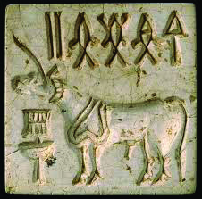
സാാമൂൂഹ്യയശാാസ്ത്രംം ക്ലാാസ്
സാാമൂൂഹ്യയശാാസ്ത്രംം ക്ലാാസ് VI
VI
21
ആദിിമ മനുുഷ്യയരും�ം സംംസ്കാാരങ്ങളും�ം
ആദിിമ മനുുഷ്യയരും�ം സംംസ്കാാരങ്ങളും�ം
ചിത്രം 1.13
സ്വവർണവുംം� വെ�ള്ളിിയുംം� മുത്തുകളും�ം ചിപ്പികളും�ം കൊൊsൊണ്ടുുണ്ടാാക്കിയ മാലകളും�ം കൈൈവളകളും�ം
കർണാഭരണങ്ങളും�ം ഇവർക്കിടയിൽ പ്രചാാരത്തിിലുണ്ടാായിരുന്നു. കളിമണ്ണുകൊൊsൊണ്ടുംം� ശിലകൾ
കൊൊsൊണ്ടുംം� അവർ മുദ്രകൾ നിർമ്മിച്ചിിരുന്നു. ഹരപ്പൻ നഗരങ്ങളിൽ നിന്നു കണ്ടെ�ത്തിിയ കളി
പ്പാട്ടങ്ങൾ, മൺപാത്രങ്ങൾ, വെ�ങ്കലപ്രതിിമ എന്നിവയെ�ല്ലാംംDZ ഹരപ്പൻ ജനതയു
ുടെെ കലാവൈൈദ
ഗ്ധ്യംം� പ്രകടമാ
ാക്കുന്നു.
എഴുത്തുവിിദ്യയ
ഹരപ്പൻ ജനതയ്ക്ക് അവരുുടേ�താായ എഴുത്തുരീതി ഉണ്ടാായിരുന്നു. അക്ഷ
രങ്ങൾക്ക് പകരം ചിഹ്നങ്ങളാണ് അവർ എഴുതാനായി ഉപയോ�ോഗിച്ചിി
രുന്നത്്. മുദ്രകളിലാണ് അവരുുടെെ എഴുത്തുവിിദ്യയ ഏറ്റവുുമധിികം കാണ
പ്പെ�ട്ടത്.
ഹരപ്പൻ സംസ്കാാരത്തിിന്റെź തകർച്ച
ഏകദേ�ശംം ബിി.സി.ഇ. 1900 ത്തോ�ോടുുകൂടി ഹരപ്പൻ നഗരങ്ങൾ തകർച്ചയെ�
നേ�രിിട്ടു. ഹരപ്പൻ
സംസ്കാാരത്തിിന്റെź തകർച്ചയെ�
സംബന്ധിച്ച് നിരവധിി അഭിപ്രായങ്ങൾ നിലനിിൽക്കുന്നു. അവയിിൽ
ചിലത്് നമുുക്ക് പരിശോ�ോധിിക്കാംം.
പ്രാചീനകാാലത്തെ� മനുുഷ്യയചരിത്രത്തെ� രേ�ഖപ്പെ�ടുുത്തുക എന്നത്് ഏറെെ ദുഷ്്കരവുംം�
ശ്രമക
രവുമായ പ്രവൃത്തിിയാണ്. എഴുതപ്പെ�ട്ട തെ�ളിിവുകൾ ഒന്നുംം� ലഭ്യയമല്ലാത്ത ചരിത്രാതീത കാലഘ
ട്ടങ്ങളിലെ മനുുഷ്യയരെെക്കുുറിച്ചുംം� അവരുുടെെ ജീീവിിതത്തെ�ക്കുറിച്ചുംം� പഠിക്കാാൻ ചരിത്രശേ�ഷിിപ്പുകളായ
പുരാവസ്തു തെ�ളിിവുകൾ മാത്രമാണ് നമുുക്ക് ആശ്രയംം. ഇത്തരംം തെ�ളിിവുകൾ വിിശകലനംം ചെ�യ്താാണ്
ചരിത്രകാരർ മനുുഷ്യയരുടെെ ഉൽപത്തിി മുതലുുള്ള ചരിത്രം രേ�ഖപ്പെ�ടുുത്തിിയിരിക്കുന്നത്്. ദശലക്ഷക്ക
ണക്കിന് വർഷങ്ങൾക്ക് മുമ്പ് രൂപപ്പെ�ട്ട മനുുഷ്യയരെെക്കുുറിച്ച് ഫോ�ോസിിൽ അവശിിഷ്ടങ്ങൾ തെ�ളിിവുകൾ
നൽകുമ്പോ�ോൾ, ശിലായുധങ്ങളും�ം ഉപകരണങ്ങളും�ം ഗുഹാചിത്രങ്ങളും�ം ശിലായുഗകാലത്തെ� മനുുഷ്യയ
കാലാവസ്ഥാാ
വ്യയതിയാനം
വനനശീ
ീകരണം
നിരന്തരമുണ്ടാായ
പ്രളയം
ഭൂമിയുടെെ അമിതമാായ
ഉപയോ�ോഗം
ഹരപ്പൻ
സംസ്കാാരത്തിിന്റെź
തകർച്ച
Page 22

സാാമൂൂഹ്യയശാാസ്ത്രംം ക്ലാാസ്
സാാമൂൂഹ്യയശാാസ്ത്രംം ക്ലാാസ് VI
VI
22
ഭാാഗംം
ഭാാഗംം 1
രെെക്കുുറിച്ച് നമ്മോ�ോട്
് പറയുുന്നു. നവീീനശിിലായുഗകാലത്തെ� കൃഷിയുടെെ ആരംഭവുംം� സ്ഥിരവാസ കേs
ന്ദ്രങ്ങളുടെെ വിികാസവുംം� മാനവചരിത്രത്തിിലെ നാഴികക്കല്ലുുകളായിരുന്നു. വെ�ങ്കലയുഗത്തിിൽ ലോോക
ത്തിിന്റെź വിിവിിധ ഭാഗങ്ങളിൽ രൂപപ്പെ�ട്ട സംസ്കാാരങ്ങൾ അക്കാാലഘട്ടത്തിിൽ മനുുഷ്യയർ
കൈൈവരിിച്ച നേ�ട്ടങ്ങളുടെെ ചരിത്രം നമുുക്ക് കാട്ടിതരുുന്നു. പ്രാചീന സംസ്കാാരങ്ങളിൽ രൂപപ്പെ�ട്ട
രീതികളും�ം അറിവുകളുമാണ് ഇന്നത്തെ�
സംസ്കാാരത്തിിന്റെź അടിത്തറ. ഭൂതകാാലത്തെ�ക്കുുറിച്ചുള്ള
ഇത്തരംം ഓർമ്മപ്പെ�ടുുത്തലുുകൾ നമുുക്ക് ഭാവിിയിലേേക്കുള്ള ചവിിട്ടുപടിയാക്കാംം.
തുുടർപ്രവർത്തനങ്ങൾ
• വിിവിിധ ശിലായുഗ ഘട്ടങ്ങളിൽ മനുുഷ്യയർ ഉപയോ�ോഗിച്ചിിരുന്ന ഉപകരണങ്ങളുടെെ
ചിത്ര ആൽബം തയ്യാറ
ാക്കൂ.
• 'വെ�ങ്കലയുഗസംസ്കാാരങ്ങളും�ം മനുുഷ്യയപുരോ�ോഗതിയുംം�' എന്ന വിിഷയത്തിിൽ കൂടുതൽ
വിവരങ്ങൾ ശേഖരിച്ച് ഡിജിറ്റൽ അവതരണം തയ്യാറ
ാക്കൂ.
സൂൂചകങ്ങൾ
♦മെെസൊ�ൊപ്പൊ�ൊട്ടേ�മിിയൻ സംസ്കാാരം
♦ഈജിപ്ഷ്യയൻ സംസ്കാാരം
♦ചൈൈനീീസ് സംസ്കാാരം
♦ഹരപ്പൻ സംസ്കാാരം
• വെ�ങ്കലയുഗ സംസ്കാാരങ്ങളുടെെ സവിിശേ�ഷതക
ൾ വെ�ളിിപ്പെ�ടുുത്തുന്ന ചിത്രങ്ങൾ
ശേഖരിച്ച് ഡിജിറ്റൽ ആൽബം തയ്യാറ
ാക്കുക
.
• കളിമൺ ഫലകംം നിർമ്മിച്ച് നിങ്ങൾക്കറിിയാവുന്ന ലിപി എഴുതി ഉണക്കി സാമൂൂ
ഹ്്യശ
ാസ്ത്രലാബിൽ പ്രദർശിപ്പിക്കുക
.
• നദീീതടങ്ങളിൽ സ്ഥിതിചെ�യ്യുുന്ന പ്രധാാന നഗരങ്ങൾ കണ്ടെ�ത്തിി പട്ടിക തയ്യാാറാാ
ക്കുക
.